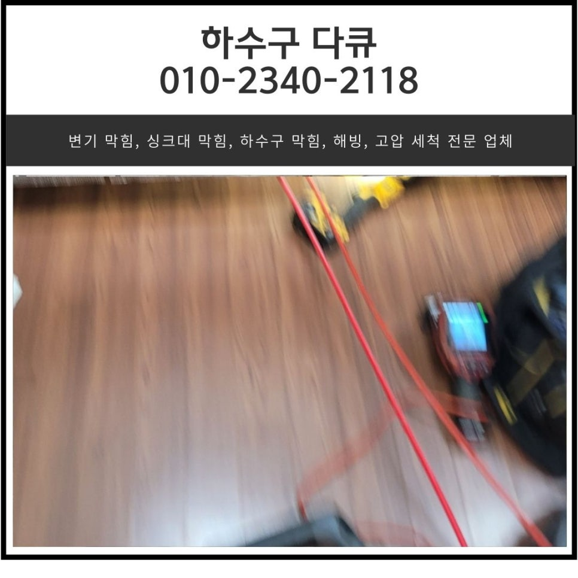
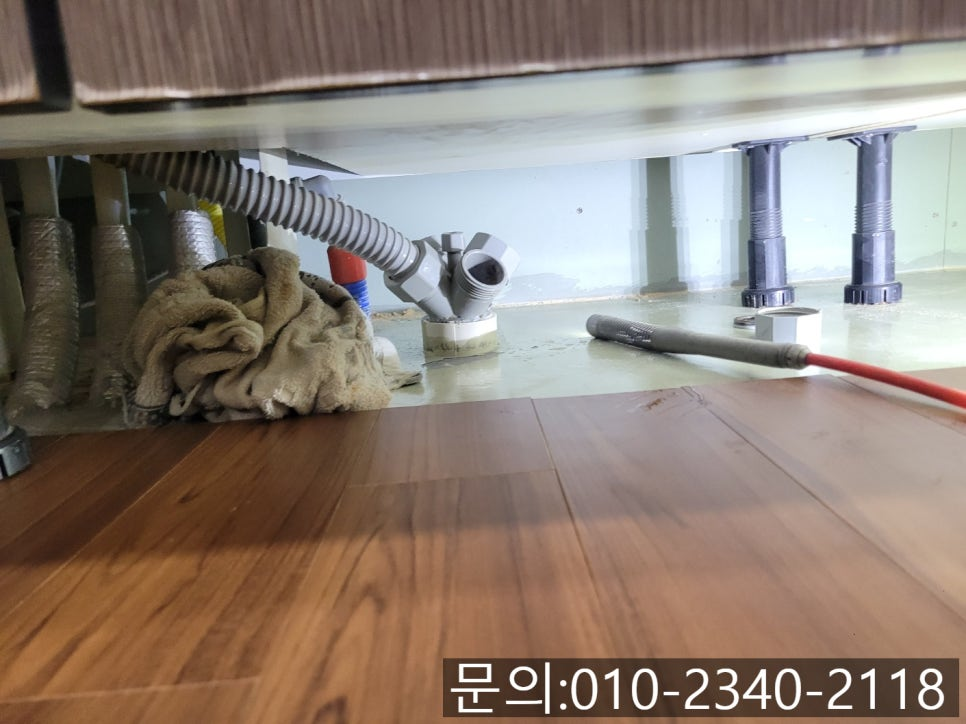
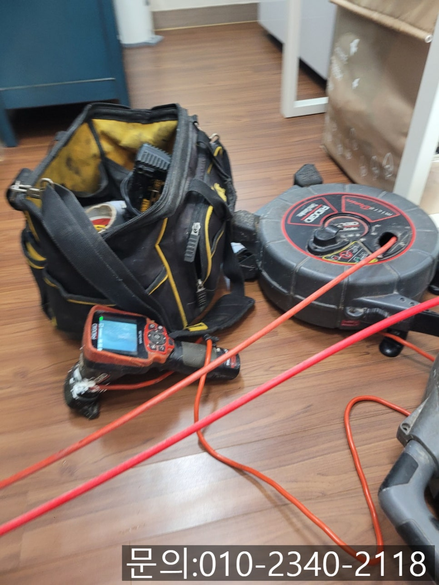
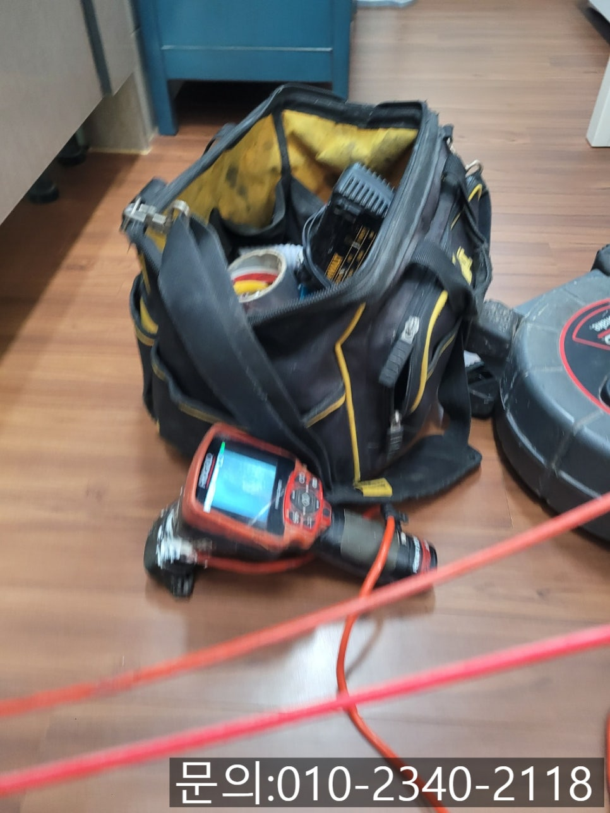
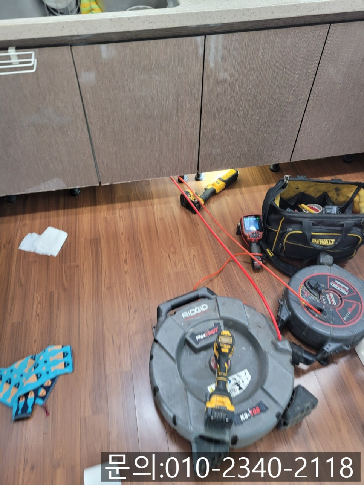
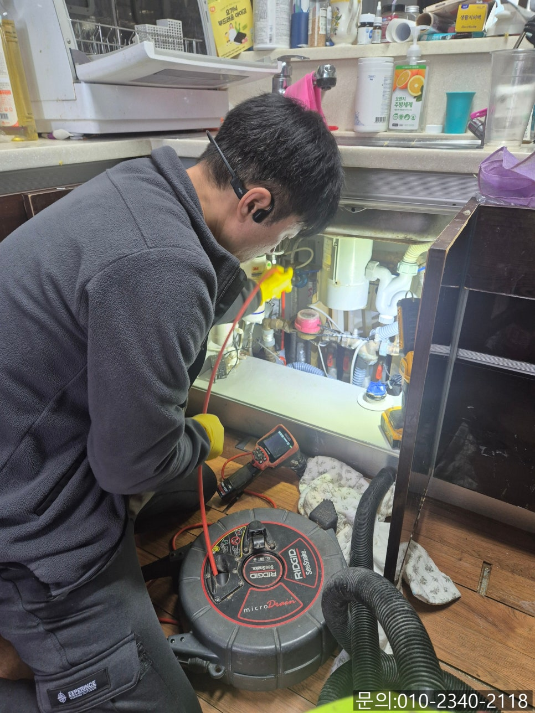
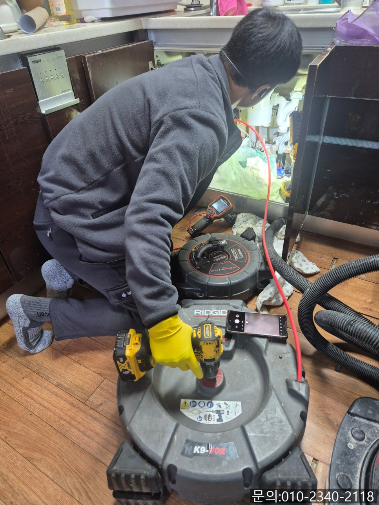

🏠 보라동 싱크대 막힘 용인 상갈동 하수구 역류 넘침 뚫는 비용
용인 보라동 싱크대막힘 전문 시공 후기

📋 작업 개요
- 위치: 용인 보라동, 보라동, 용인
- 서비스 유형: 싱크대막힘, 하수구막힘, 배관막힘, 역류해결, 뚫는업체, 배관청소
- 작업 일시: 2025. 4. 6. 15:10
- 업체명: 하수구수사대 (010-5615-2118)
🔍 문제 상황
안녕하세요.
보라동 싱크대 막힘, 용인 상갈동 하수구 역류, 넘침 뚫는 비용에 대해 소개해 드릴 하수구 다큐입니다.
보라동 싱크대 막힘이 발생하는 이유는 다양한데요.
큰 틀을 살펴보면 물이 흘러 지나가는 하수구 배관 내부에 물이 아닌 다른 이물질들이 쌓이면서 나타나는 경우가 대부분입니다.
그러다 보니 이미 보라동 싱크대 막힘이나 역류 현상이 발생하고 있다면 배관 내부에 이물질이 많이 쌓여있을 확률이 높다는 것을 알고 계셔야 합니다.
지금부터는 하수구 다큐가 용인 싱크대 막힘으로 연락을 받고 직접 다녀온 현장을 소개해 드릴게요.
용인 상갈동 하수구 역류, 넘침으로 고객님의 연락을 받았습니다.

🔎 원인 분석
💡 전문가 진단: 정밀 진단 장비를 사용하여 슬러지의 고착 여부를 판명하고 타격/세척 작업을 실시했습니다.
주방에서 사용한 물이 흘러내려 가지 않는다며 제일 먼저 비용을 물어보셨어요.
아무래도 고객님들은 막힘이 발생했을 때 가장 궁금한 게 뚫는 비용이 실 거예요.
하지만 배관의 특성상 눈으로 직접 내부를 확인할 수 없다 보니 고객님들의 설명만으로는 정확한 막힘의 정도를 파악할 수 없어 하수구 다큐는 모든 현장을 직접 방문해 정확한 원인을 파악하고 비용을 안내해 드리고 있습니다.
어떤 현장이던 무료로 방문해서 작업을 진행할 때 적합한 비용을 안내해 드리고 있는데요.
금액이 마음에 들지 않으시면 작업을 의뢰하지 않으셔도 괜찮으니 부담 갖지 않으셔도 됩니다.
오늘 소개해 드릴 용인 상갈동 하수구 역류, 넘침 현장 역시 무료로 견적을 요청하셨어요.
우선 내시경 카메라를 준비해 주방으로 들어가 막힘의 원인을 파악해 보기로 했습니다.

🔧 작업 과정
이미 사용한 물이 흘러가지 못할 정도로 배관에 이물질이 가득 차 있는 상태지만 내시경 카메라를 이용해 정확하게 원인을 파악하고 고객님께 발생되는 비용과 작업 방법, 소요시간 등을 안내해 드렸습니다.
다른 업체에서도 무료 견적을 봤지만 이렇게 자세하게 설명을 듣지 못하셨던 고객님은 가격도 저렴하다며 작업을 맡겨주셨어요.
차에 있던 필요한 장비들을 준비하고 배관 청소를 진행하기로 했습니다.
용인 상갈동 하수구 역류, 넘침 현장에서 사용하게 될 장비는 플렉스 샤프트입니다.
플렉스 샤프트 장비는 노즐 끝에 달린 체인이 배관 내부에서 회전하면서 배관에 쌓인 이물질을 타격해 잘게 부서 주는 역할을 합니다.
내시경 카메라를 이용해 내관 내부에 위치하고 있는 이물질의 위치를 파악하고 플렉스 샤프트를 이용해 잘게 부서 제거하는 작업을 반복해서 진행해야 합니다.
여러 차례 반복해서 플렉스 샤프트로 작업하자 많은 양의 이물질이 제거되고 소량의 기름 슬러지들이 보입니다.
작은 기름 슬러지도 남겨 놓으면 물의 흐름을 방해하기 때문에 남김없이 모두 제거해야 해요.
내시경 카메라로 잔여 이물질의 위치를 파악해가며 청소를 진행하자 모든 기름 슬러지가 제거되고 깨끗해진 배관 내부를 확인할 수 있었습니다.
작업을 옆에서 지켜보시던 고객님께서도 깨끗해진 배관을 직접 보시고는 속이 다 시원하다며 이제는 막힘 걱정 없이 주방 일을 할 수 있겠다며 좋아해 주셨습니다.
마지막으로 많은 양의 물을 흘려보내면서 배관에 다른 문제는 없는지 테스트까지 진행하고 작업을 마칠 수 있었습니다.


✅ 작업 완료
가정에서 물을 사용하는 곳이라면 어디든 하수구 역류나 막힘이 발생할 수 있어요.
하수구 막힘이 발생하면 고민하지 마시고 무료 견적 받아보세요!
경기도 용인시 기흥구 동백중앙로 191 8층 c8736호




⚠️ 주방 싱크대 배관 막힘 예방 수칙
- ✅ 기름기가 묻은 식기나 프라이팬은 설거지 전 키친타올로 반드시 기름때를 닦아내세요.
- ✅ 주기적으로 싱크대 개수대에 뜨거운 물을 가득 받아 한 번에 내려 배관 내부 기름을 씻어내세요.
- ✅ 배수구 거름망을 미세한 필터로 사용하시고 음식물 찌꺼기가 틈으로 새어 들지 않게 관리하세요.
- ✅ 베이킹소다와 식초를 뜨거운 물과 함께 일주일에 한 번씩 부어주면 배관 살균과 막힘 예방에 좋습니다.
💡 핵심 정리
- 확실한 장비 작업(내시경 점검 및 샤프트 스케일링)으로 원인을 뿌리 뽑습니다.
- 작업 후 1년 이내에 동일한 부위 재발 시 100% 무상 A/S 서비스를 보장합니다.
- 서울 · 경기 · 인천 전 지역에 24시간 언제든 긴급 출동할 수 있도록 항시 대기 중입니다.
❓ 자주 묻는 질문 (FAQ)
🚨 용인 보라동 싱크대막힘 문제로 고민이신가요?
정확한 원인 진단과 확실한 시공으로 재발 없는 해결을 약속드립니다.
24시간 긴급 출동 | 서울 · 경기 · 인천 전지역 | 1년 내 재발 시 무상 A/S